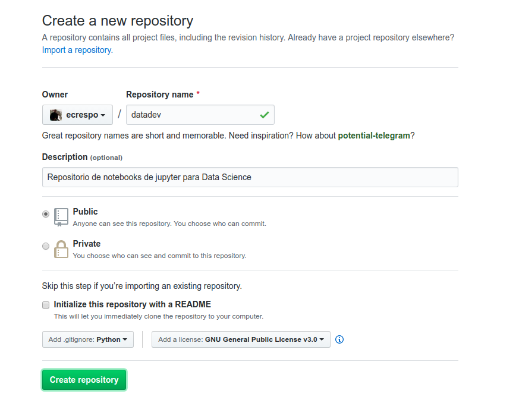
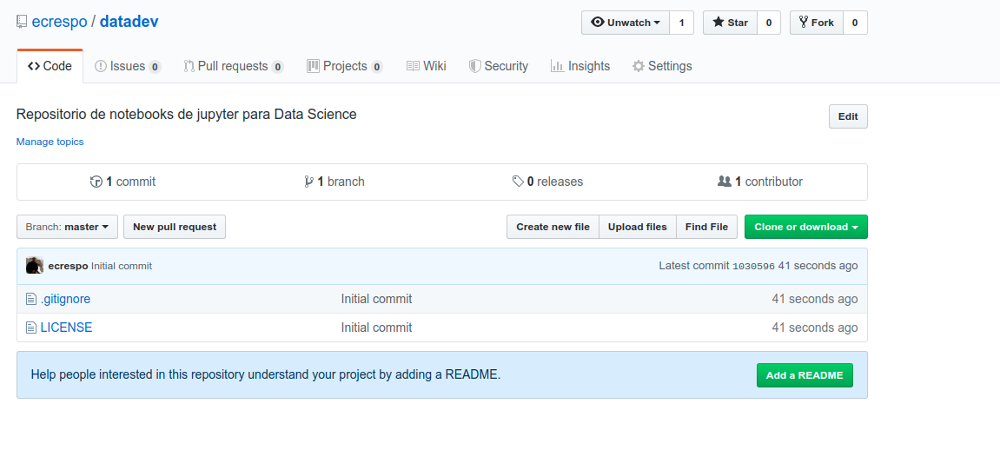
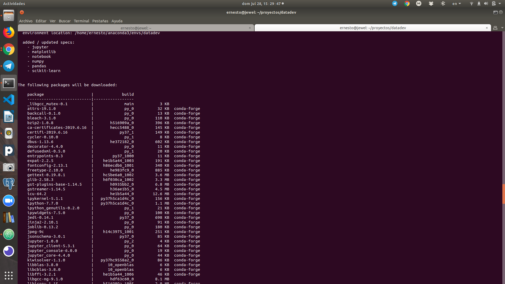
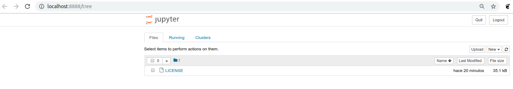
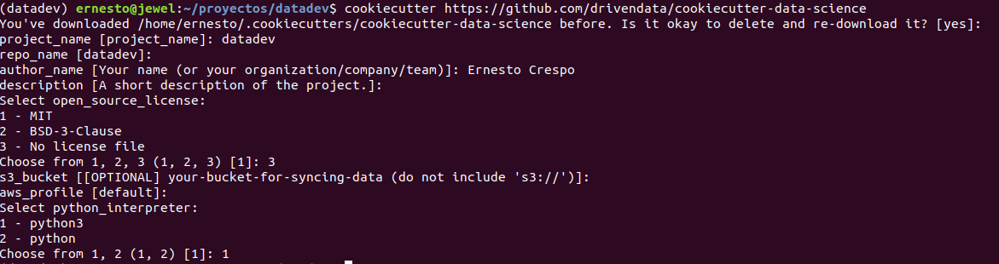
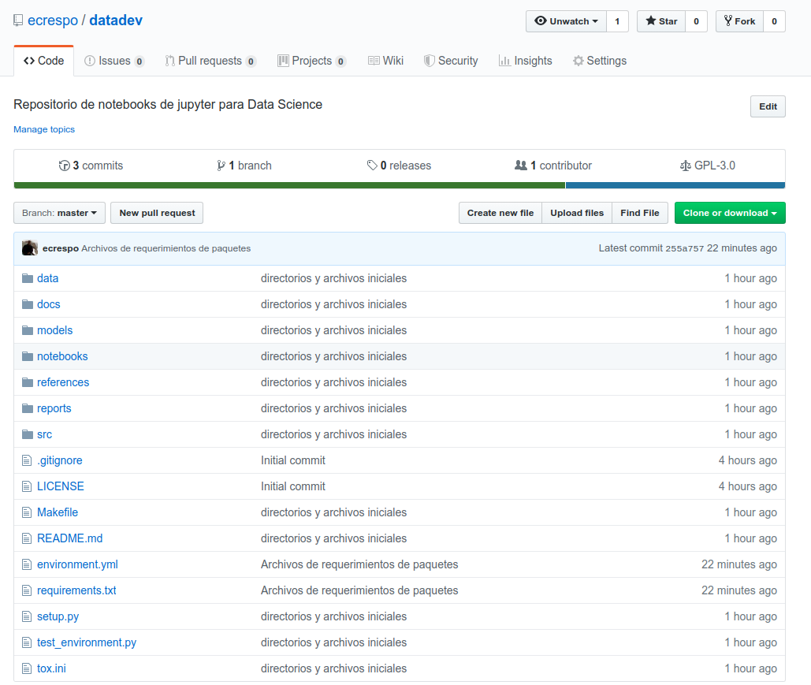

Crear entorno de desarrollo para Ciencia de Datos con Anaconda, Jupyter, git y cookiecutter
Posted on dom 28 julio 2019 in Tutorial de Data Science • 5 min read

Desde hace un tiempo he trabajado manipulando datos y es un lío tener los archivos de los datos organizados, tanto la entrada de datos, archivos de datos intermedios y los datos definitivos, además de tener versionado los notebooks de jupyter. La idea de este artículo es dar una guía de organizar los datos y los notebooks, así como las herramientas necesarias, en próximos artículos se tocará el tema de integración continua y el de la gestión de pipeline de datos (Data Pipeline management).
Lo primero que se tiene que hacer es crear un repositorio en github (artículo de como crear repositorio).
Creando repositorio datadev:

Repositorio datadev creado:

Se clona el repositorio (este paso se descarta al usar cookiecutter):
git clone git@github.com:ecrespo/datadev.git
Instalar Anaconda
Anaconda es una distribución de Python dedicada al computo científico o ciencia de datos. Para el caso de Linux se puede descargar del siguiente enlace Python 3.7.
Para instalar se ejecuta el siguiente comando:
bash Anaconda3-2019.07-Linux-x86_64.sh
Crear el entorno de trabajo de anaconda
Se crea un entorno llamado datadev:
conda create -n datadev
Para activar el entorno se ejecuta:
conda activate datadev
Para desactivarlo:
conda deactivate
Al activarlo se tiene el siguiente prompt:
(datadev) ernesto@jewel:~/proyectos/datadev$
Se agrega el canal conda-forge:
conda config --env --add channels conda-forge
Verificar que el canal se ha agregado:
conda config --show channels
channels:
- conda-forge
- defaults
Instalar paquetes básicos:
conda install pandas scikit-learn matplotlib notebook jupyter numpy

Instalar paquetes que no se encuentran en conda-forge:
conda install -c plotly plotly_express
Se inicia jupyter notebook:
jupyter notebook
Esto abre el navegador en el jupyter notebook:

Se instala cookiecutter
Se ejecuta el instalador de anaconda para instalar cookiecutter.
conda install cookiecutter
Se crea el proyecto de ciencia de datos:
Se ejecuta fuera del repositorio datadev, con nombre datadev.
cookiecutter https://github.com/drivendata/cookiecutter-data-science
Esto genera unas preguntas para crear los directorios:

Esto crea la siguiente estructura de directorios y archivos:
.
├── data
│ ├── external <- Data de fuentes de 3eras partes
│ ├── interim <- Datos intermedios que han sido transformados
│ ├── processed <- Datos procesados, que serán usados para el modelo
│ └── raw <- Data cruda, datos descargados sin modificar
├── docs <- Default proyecto sphinx
│ ├── commands.rst
│ ├── conf.py
│ ├── getting-started.rst
│ ├── index.rst
│ ├── make.bat
│ └── Makefile
├── LICENSE
├── Makefile <- Archivo makefile con comandos como make data o make train
├── models <- Modelos entrados o serializados, predicciones
├── notebooks <- Notebooks de jupyter
├── README.md
├── references <- Diccionario de datos, manuales, y cualquier otro material explicativo
├── reports <- análisis generados como pdf, html, latex, etc
│ └── figures <- Gráficas generadas a hacer usados en los reportes
├── requirements.txt <- lista de paquetes requeridos para reproducir el entorno, pip freeze > requirements.txt
├── setup.py <- Hace este proyecto instalable con pip install -e
├── src <- Código fuente de este proyecto
│ ├── data <-Scripts para descargar o generar datos
│ │ ├── __init__.py
│ │ └── make_dataset.py
│ ├── features <- Scripts para convertir la data cruda a datos para el modelo
│ │ ├── build_features.py
│ │ └── __init__.py
│ ├── __init__.py
│ ├── models <- Scripts para entrenar el modelo y luego hacer predicciones
│ │ ├── __init__.py
│ │ ├── predict_model.py
│ │ └── train_model.py
│ └── visualization <- Scripts para crear exploración y resultados orientados a la visualización
│ ├── __init__.py
│ └── visualize.py
├── test_environment.py
└── tox.ini <- Archivo tox con configuraciones para correr tox
Instalar requerimientos adicionales:
pip install -r requirements.txt
Crear archivo yml del entorno Anaconda
Para crear el archivo yml se ejecuta el siguiente comando:
conda env export > environment.yml
Esto genera un archivo yml con el contenido del entorno datadev:
name: datadev
channels:
- plotly
- conda-forge
- defaults
dependencies:
- _libgcc_mutex=0.1=main
- arrow=0.14.3=py37_0
- asn1crypto=0.24.0=py37_1003
- attrs=19.1.0=py_0
- backcall=0.1.0=py_0
- binaryornot=0.4.4=py_1
- bleach=3.1.0=py_0
- bzip2=1.0.8=h516909a_0
- ca-certificates=2019.6.16=hecc5488_0
- certifi=2019.6.16=py37_1
- cffi=1.12.3=py37h8022711_0
- chardet=3.0.4=py37_1003
- click=7.0=py_0
- cookiecutter=1.6.0=py37_1000
- cryptography=2.7=py37h72c5cf5_0
- cycler=0.10.0=py_1
- dbus=1.13.6=he372182_0
- decorator=4.4.0=py_0
- defusedxml=0.5.0=py_1
- entrypoints=0.3=py37_1000
- expat=2.2.5=he1b5a44_1003
- fontconfig=2.13.1=h86ecdb6_1001
- freetype=2.10.0=he983fc9_0
- future=0.17.1=py37_1000
- gettext=0.19.8.1=hc5be6a0_1002
- glib=2.58.3=h6f030ca_1002
- gst-plugins-base=1.14.5=h0935bb2_0
- gstreamer=1.14.5=h36ae1b5_0
- icu=64.2=he1b5a44_0
- idna=2.8=py37_1000
- ipykernel=5.1.1=py37h5ca1d4c_0
- ipython=7.7.0=py37h5ca1d4c_0
- ipython_genutils=0.2.0=py_1
- ipywidgets=7.5.0=py_0
- jedi=0.14.1=py37_0
- jinja2=2.10.1=py_0
- jinja2-time=0.2.0=py_2
- joblib=0.13.2=py_0
- jpeg=9c=h14c3975_1001
- json5=0.8.5=py_0
- jsonschema=3.0.1=py37_0
- jupyter=1.0.0=py_2
- jupyter_client=5.3.1=py_0
- jupyter_console=6.0.0=py_0
- jupyter_core=4.4.0=py_0
- jupyterlab=1.0.4=py37_0
- jupyterlab_server=1.0.0=py_1
- kiwisolver=1.1.0=py37hc9558a2_0
- libblas=3.8.0=10_openblas
- libcblas=3.8.0=10_openblas
- libffi=3.2.1=he1b5a44_1006
- libgcc-ng=9.1.0=hdf63c60_0
- libgfortran-ng=7.3.0=hdf63c60_0
- libiconv=1.15=h516909a_1005
- liblapack=3.8.0=10_openblas
- libopenblas=0.3.6=h6e990d7_5
- libpng=1.6.37=hed695b0_0
- libsodium=1.0.17=h516909a_0
- libstdcxx-ng=9.1.0=hdf63c60_0
- libuuid=2.32.1=h14c3975_1000
- libxcb=1.13=h14c3975_1002
- libxml2=2.9.9=hee79883_2
- markupsafe=1.1.1=py37h14c3975_0
- matplotlib=3.1.1=py37_1
- matplotlib-base=3.1.1=py37he7580a8_1
- mistune=0.8.4=py37h14c3975_1000
- nbconvert=5.5.0=py_0
- nbformat=4.4.0=py_1
- ncurses=6.1=hf484d3e_1002
- notebook=6.0.0=py37_0
- numpy=1.16.4=py37h95a1406_0
- openblas=0.3.6=h6e990d7_5
- openssl=1.1.1c=h516909a_0
- pandas=0.25.0=py37hb3f55d8_0
- pandoc=2.7.3=0
- pandocfilters=1.4.2=py_1
- parso=0.5.1=py_0
- patsy=0.5.1=py_0
- pcre=8.41=hf484d3e_1003
- pexpect=4.7.0=py37_0
- pickleshare=0.7.5=py37_1000
- pip=19.2.1=py37_0
- plotly=4.0.0=py_0
- plotly_express=0.4.0=py_0
- poyo=0.5.0=py_0
- prometheus_client=0.7.1=py_0
- prompt_toolkit=2.0.9=py_0
- pthread-stubs=0.4=h14c3975_1001
- ptyprocess=0.6.0=py_1001
- pycparser=2.19=py37_1
- pygments=2.4.2=py_0
- pyopenssl=19.0.0=py37_0
- pyparsing=2.4.1.1=py_0
- pyqt=5.9.2=py37hcca6a23_0
- pyrsistent=0.15.4=py37h516909a_0
- pysocks=1.7.0=py37_0
- python=3.7.3=h33d41f4_1
- python-dateutil=2.8.0=py_0
- pytz=2019.1=py_0
- pyzmq=18.0.2=py37h1768529_2
- qt=5.9.7=h0c104cb_3
- qtconsole=4.5.2=py_0
- readline=8.0=hf8c457e_0
- requests=2.22.0=py37_1
- retrying=1.3.3=py_2
- scikit-learn=0.21.2=py37hcdab131_1
- scipy=1.3.0=py37h921218d_1
- send2trash=1.5.0=py_0
- setuptools=41.0.1=py37_0
- sip=4.19.8=py37hf484d3e_1000
- six=1.12.0=py37_1000
- sqlite=3.29.0=hcee41ef_0
- statsmodels=0.10.1=py37hc1659b7_0
- terminado=0.8.2=py37_0
- testpath=0.4.2=py_1001
- tk=8.6.9=hed695b0_1002
- tornado=6.0.3=py37h516909a_0
- traitlets=4.3.2=py37_1000
- urllib3=1.25.3=py37_0
- wcwidth=0.1.7=py_1
- webencodings=0.5.1=py_1
- wheel=0.33.4=py37_0
- whichcraft=0.6.0=py_0
- widgetsnbextension=3.5.0=py37_0
- xorg-libxau=1.0.9=h14c3975_0
- xorg-libxdmcp=1.1.3=h516909a_0
- xz=5.2.4=h14c3975_1001
- zeromq=4.3.2=he1b5a44_2
- zlib=1.2.11=h516909a_1005
- pip:
- alabaster==0.7.12
- awscli==1.16.207
- babel==2.7.0
- botocore==1.12.197
- colorama==0.3.9
- coverage==4.5.3
- docutils==0.15.1
- flake8==3.7.8
- imagesize==1.1.0
- jmespath==0.9.4
- mccabe==0.6.1
- packaging==19.0
- pyasn1==0.4.5
- pycodestyle==2.5.0
- pyflakes==2.1.1
- python-dotenv==0.10.3
- pyyaml==5.1
- rsa==3.4.2
- s3transfer==0.2.1
- snowballstemmer==1.9.0
- sphinx==2.1.2
- sphinxcontrib-applehelp==1.0.1
- sphinxcontrib-devhelp==1.0.1
- sphinxcontrib-htmlhelp==1.0.2
- sphinxcontrib-jsmath==1.0.1
- sphinxcontrib-qthelp==1.0.2
- sphinxcontrib-serializinghtml==1.1.3
prefix: /home/ernesto/anaconda3/envs/datadev
Lo bueno es que este archivo maneja los paquetes instalados por anaconda como por pip.
Para usar el archivo yml se ejecuta:
conda env create -f environment.yml -p /home/user/anaconda3/envs/env_name
Donde la opción -p es para definir la ruta donde se instala el entorno.
Git
Para terminar el artículo se asocia el directorio datadev al repositorio que se creó en github o gitlab.
Se ejecuta git init dentro del directorio de datadev:
git init
Se agrega el repositorio al repo local:
bash
git remote add origin https://github.com/ecrespo/datadev.git
Se define la rama master y repositorio origin a subir:
bash
git push --set-upstream origin master
Con esto se tiene un entorno de trabajo, en siguientes artículos se irá mostrando otras herramientas a usar en el entorno.
Al final el repositorio en github queda como se muestra a continuación:

Referencias:
- Introduction to Github for Data Scientists
- Creating Reproducible Data Science Projects
- How to Start a Data Science Project in Python
- Managing Data Science Projects with Git
- Cookiecutter Data Science — Organize your Projects — Atom and Jupyter
- Setup a python data analysis environment
- Set up a lean, robust data science environment with Miniconda and Conda-Forge
- Repositorio de cookiecutter data science
- Cookiecutter Data Science
¡Haz tu donativo! Si te gustó el artículo puedes realizar un donativo con Bitcoin (BTC) usando la billetera digital de tu preferencia a la siguiente dirección: 17MtNybhdkA9GV3UNS6BTwPcuhjXoPrSzV
O Escaneando el código QR desde la billetera: